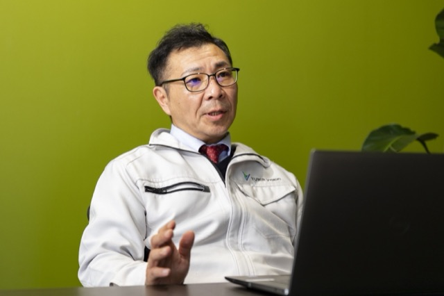
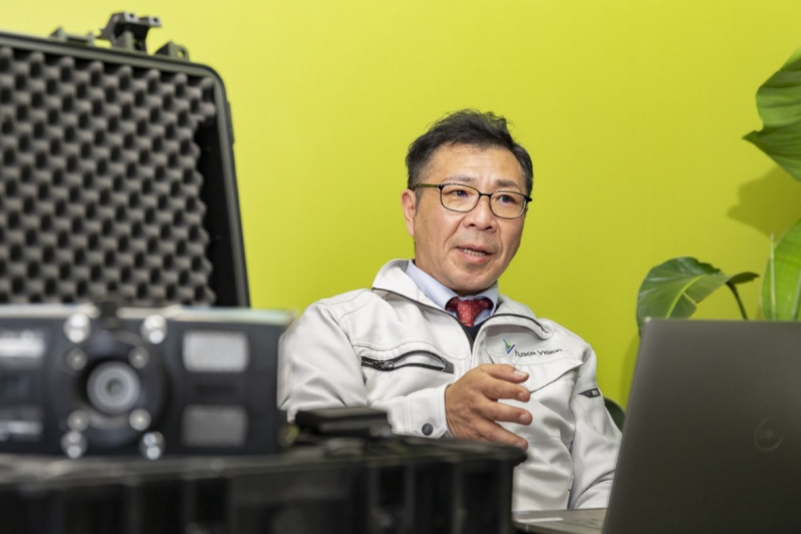
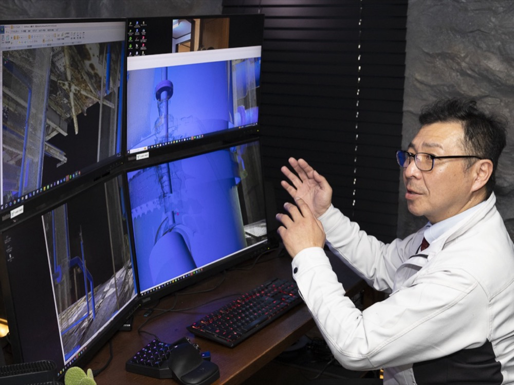
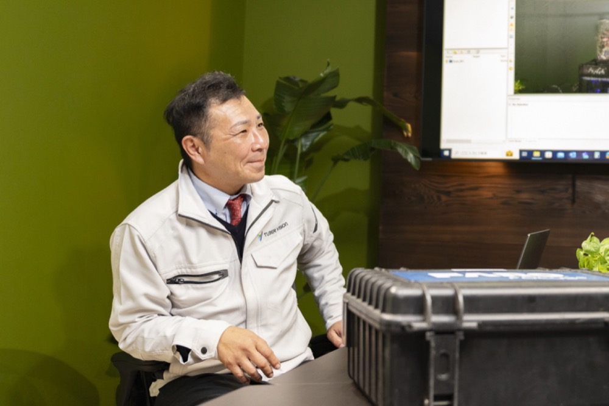
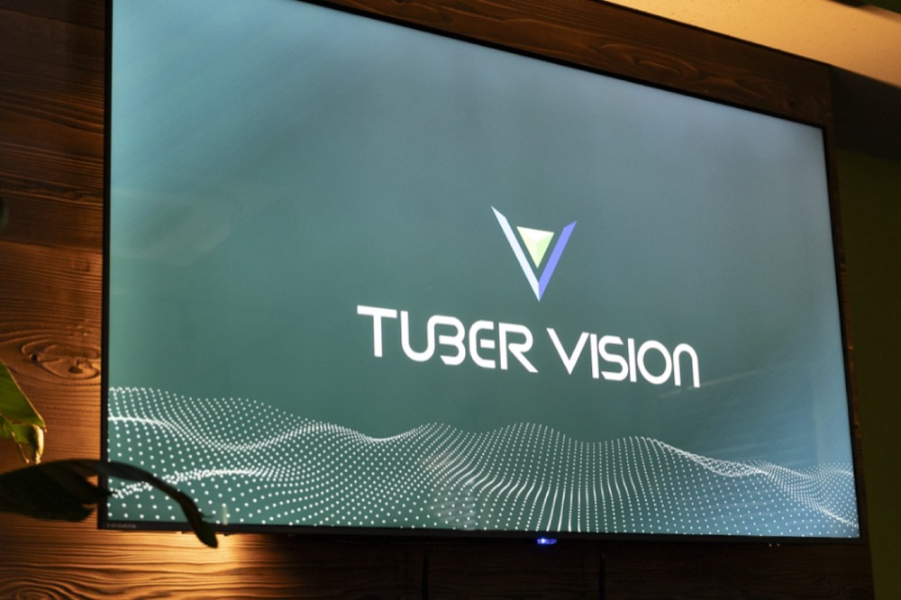

管工業界の革命児
工藤 淳Jun Kudo
株式会社TuberVision 代表
配管工事会社にて22年勤務し、そこで設計や施工管理技術を学ぶ。43歳で退職し株式会社TuberVisionを設立。現在に至る。
企業サイトを見るTRACK 01
管工業界の革命児

株式会社TuberVision。千葉県市原市にあるこの会社では、さまざまな建設現場における管工事の設計から施工までを手掛けている。着目すべきは彼らの扱う革新的な技術だ。3Dレーザースキャナーで現場の空間を迅速に3Dスキャンし、そのデータを即座にPCに取り込む。そして、「3Dシームレス方式」と名付けられた独自の設計手法を用いることで、3D点群データの段階から設計を行う。この方法により、従来の工法に比べて圧倒的な速度と精度で、ズレのない正確無比の設計図を作成し、実用化している。
「私の地元の市原市は京葉工業地域の中心ということもあり、我々の長所が最大限活用できる土地だと考えています。2018年に創業したばかりですから、これからさらに我々が実績を重ねていくにあたって、これ以上ない最適な舞台です。」そう朗らかに語る工藤代表。業界が注目している新進気鋭の会社が臨む景色を追ってみた。
TRACK 02
現場の悩みをすべて解決！3DCADとの出会い


配管工事会社にて22年勤務し、そこで設計や施工管理技術など工事に関わる多くを体得した工藤代表。43歳で退職し、2018年に株式会社TuberVisionを設立した。独立に至るまでのその道のりは決して順風満帆なものではなかったという。
「若いころはロックバンドで食っていこうと思っていて、ベーシストとして活動していた時期がありました。縁あって本場アメリカに音楽を見に行ったときのことです。当時シアトルのブロードウェイでは、週末になると多くのオープンカフェがライブハウスに早変わりするんです。
ダウンタウンからブロードウェイにバスで向かう途中で、バンドマンたちが、楽器をケースにも入れずに同じバスに乗り込んできたんですが、バスの中で音を出し始めるんです。その人達がバスから降り、店に走って行ったと思ったら、ジャックをアンプにつないでそのまま演奏し始めるんですよ。そのときに聞いた1音目で、なんだか自分の小ささを感じてしまって、心が折れちゃったんですね。こりゃダメだ勝てない、と思ってすぐ帰国しました。」と語る工藤代表。本場のスケールに圧倒され失意のなか帰国し、母の知り合いから紹介されたのが、管工事の仕事だったという。

TRACK 03
「スムーズに行き過ぎて逆に怖い」現場も驚くその技術
手作業での調査となると精度が低くなり間違いも多く発生し、それが設計に影響を与えてしまう。一度ズレたときの現場の損失は大きく、追加で調達する資材や工事のやり直しは珍しくなかった。工賃は追加で発生し、長時間労働による作業員のケガなども起こりやすかったという。
しかし3Dスキャナーによるリアルキャプチャー技術を現場に導入すると、ミリ単位の現場情報が、より高精度、且つ短時間で入手することができる。必要最小限の資材と人員で、当初計画していた時間よりも格段に早く、そして正確に現場作業を完了することが可能となっている。まさに業界の革命とも言えるだろう。
「正直業界では図面の信頼度は低く、あいまいな計画をしていることがほとんどでした。ところが、この技術を使って図面の信頼度が高まったことで、追加の資材購入や人員など無駄なコストの削減に貢献しています。3D技術に興味を示してくれたクライアントからは「信じられないほどスムーズだ、トラブルが起こらなすぎて逆に怖い」と言っていただいたこともありますね（笑）。」と工藤代表は語る。
TRACK 04
「夢ではなく目標」自社工場設立と海外進出
業界で堅実な功績を刻んでいる株式会社TuberVision。目下の課題は会社規模の拡大だ。調査から設計、現場での施工までを一貫して請け負っている株式会社TuberVision、関東の枠を越え全国各地からの依頼が殺到しているという。より素早く柔軟な対応ができるよう、直近では自社工場の設立を目標にしているのだ。そして供給力が確保でき次第、関東各地、大阪、九州方面への積極的な進出を目指していると工藤代表は語る。
「設計分野のみでいうと、海外案件でも対応させて頂いている状況です。東南アジアをはじめ、海外では日本よりも3D技術が浸透していると聞いています。今後、日本も負けないように積極的に実績を積んで、得た知見を日本で普及していきたいですね。」